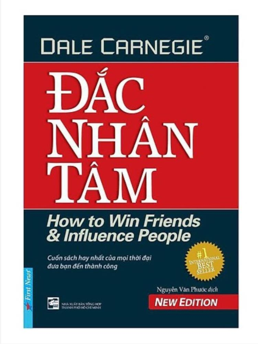

| Sách đắc nhân tâm | |
|---|---|
|  | Tác giả: Dare Carnegie |
| Cố vấn xuất bản: DOROTHY CARNEGIE | |
| Trợ lý xuất bản: ARTHUR R. PELL | |
| Dịch thuật: NGUYÊN VẪN PHƯỚC -DƯƠNG NGỌC HÂN NGUYỄN CÔNG VINH - VƯƠNG BẢO LONG NGUYỄN TRỊNH KHÁNH LINH - PHẠM PHÚ NGỌC TRAI |
|
| Nhà xuất bản: Nhà xuất bản Trẻ | |
| Chủ đề: Tâm lý | |
| Đắc Nhân Tâm Tác giả: Dare Carnegie Cố vấn xuất bản: DOROTHY CARNEGIE Trợ lý xuất bản: ARTHUR R. PELL Dịch thuật: NGUYÊN VẪN PHƯỚC -DƯƠNG NGỌC HÂN NGUYỄN CÔNG VINH - VƯƠNG BẢO LONG NGUYỄN TRỊNH KHÁNH LINH - PHẠM PHÚ NGỌC TRAI Nhà xuất bản: Nhà xuất bản Trẻ Chủ đề: Tâm lý How To Win Friends and Influence People của Dale Carnegie là quyển sách nổi tiếng nhất, bán chạy nhất và có tầm ảnh hưởng nhất của mọi thời đại. Tác phẩm đã được chuyển ngữ sang hầu hết các thứ tiếng trên thế giới và có mặt ở hàng trăm quốc gia. Đây là quyển sách duy nhất về thể loại self-help liên tục đứng đầu danh mục sách bán chạy nhất (Best-selling Books) do báo The New York Times bình chọn suốt 10 năm liền. Riêng bản tiếng Anh của sách đã bán được hơn 15 triệu bản trên thế giới. Tác phẩm có sức lan tỏa vô cùng rộng lớn – dù bạn đi đến bất cứ đâu, bất kỳ quốc gia nào cũng đều có thể nhìn thấy. Tác phẩm được đánh giá là quyển sách đầu tiên và hay nhất, có ảnh hưởng làm thay đổi cuộc đời của hàng triệu người trên thế giới. | |
| Giá bán: 100,000 VNĐ/Cuốn | |